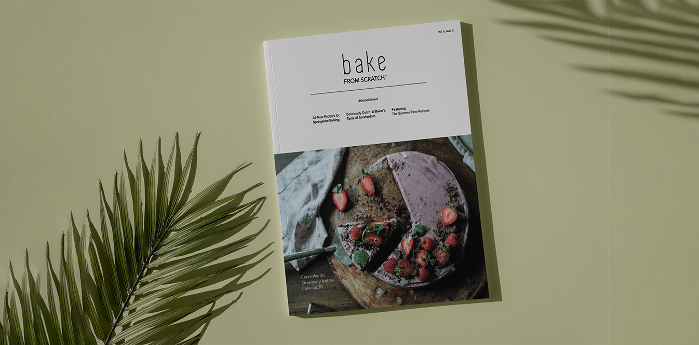
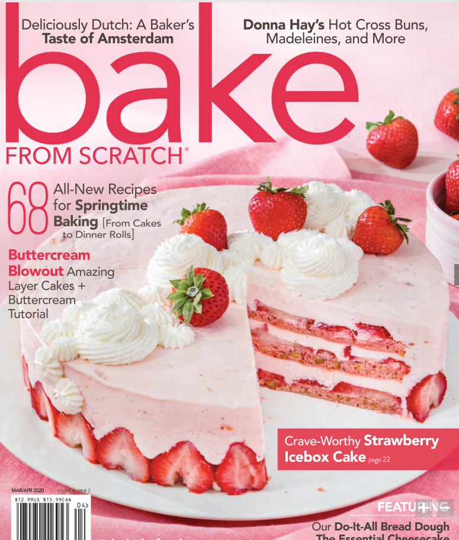
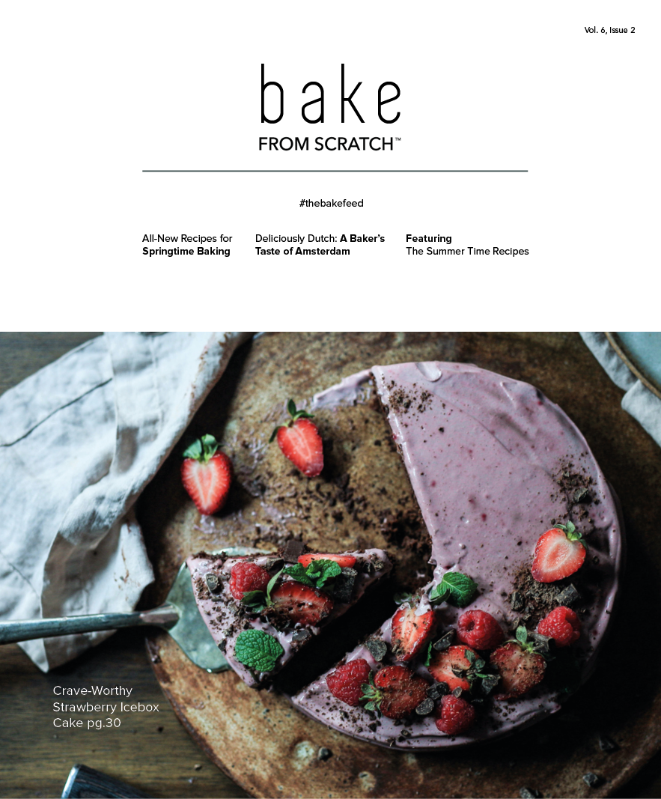
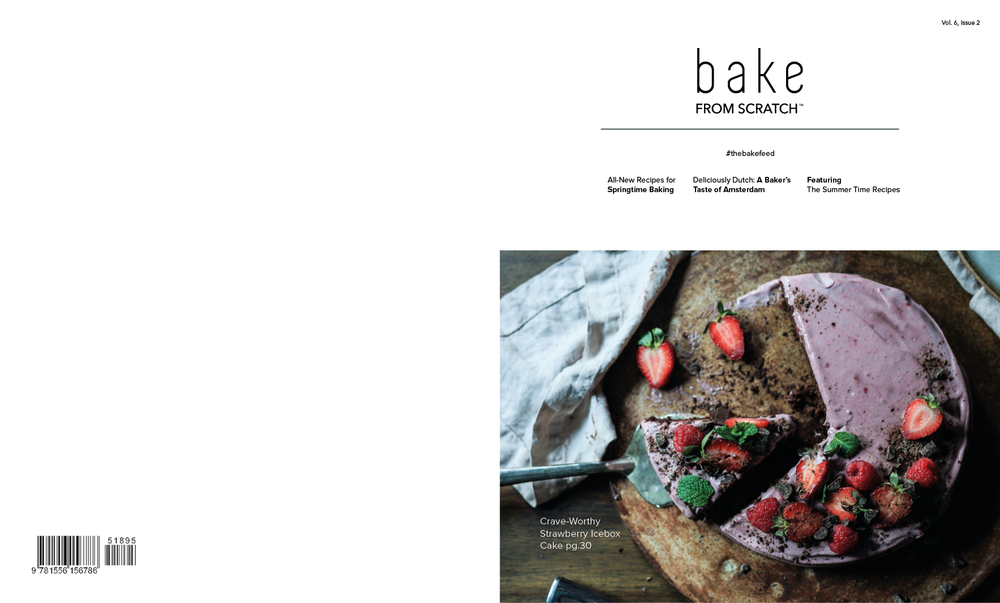
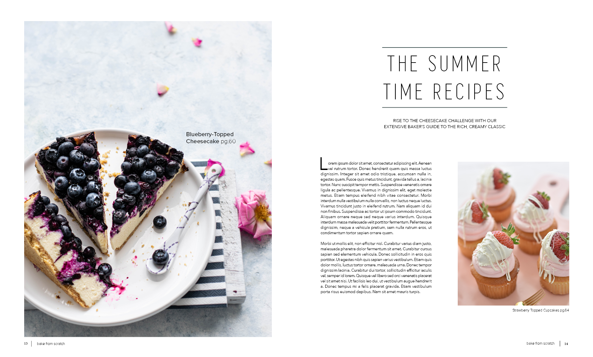
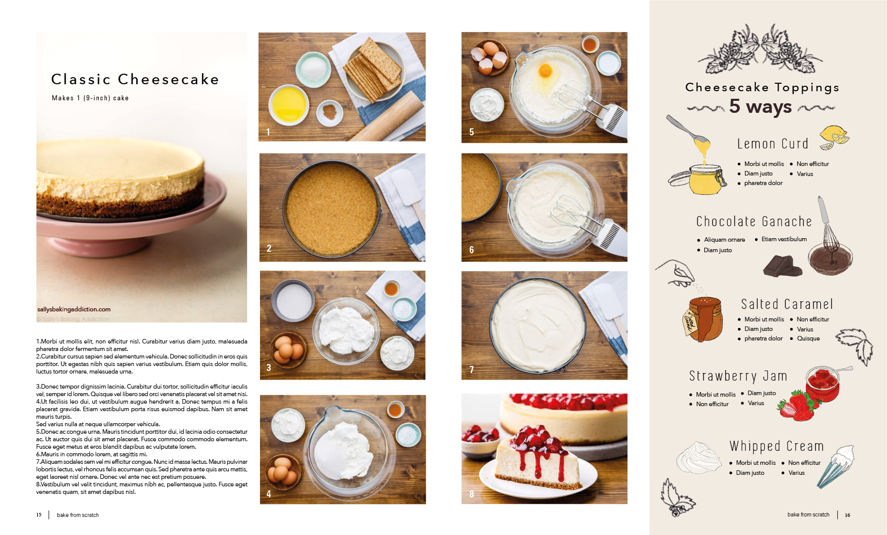
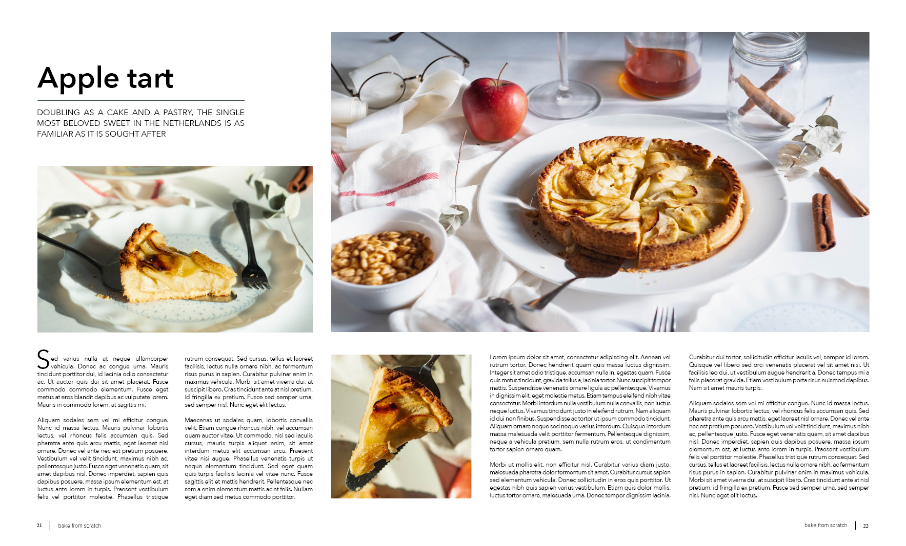
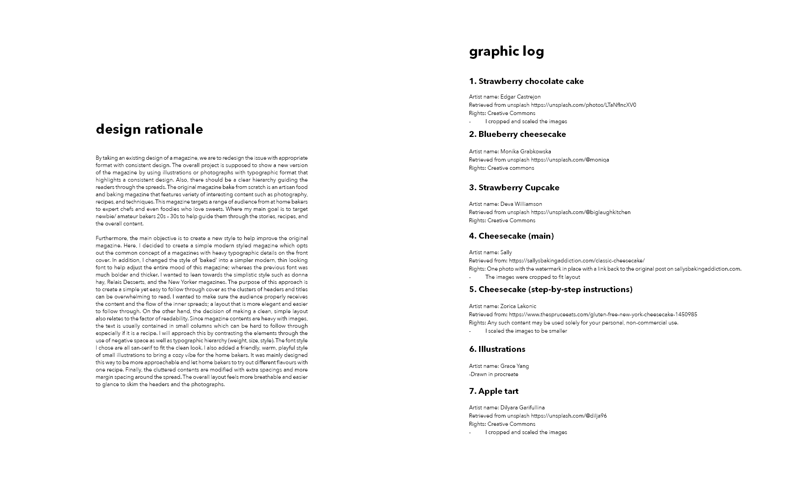
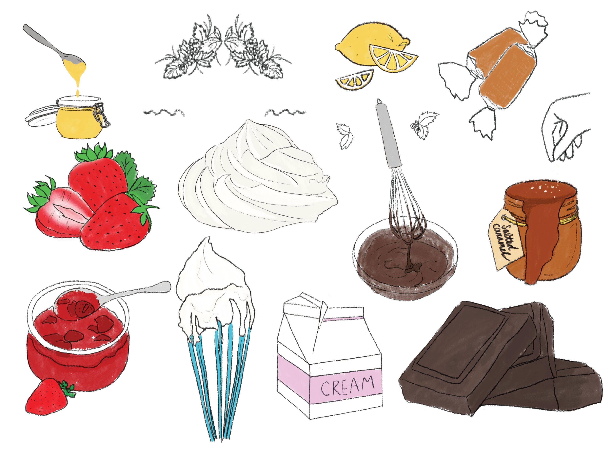

Magazine Redesign
Skills
Graphic design, IllustrationTools
Indesign, Photoshop, ProcreateProject Overview
By taking an existing design of a magazine, we are to redesign the issue with appropriate format with consistent design. The overall project is supposed to show a new version of the magazine by using illustrations or photographs with typographic format that highlights a consistent design. Also, there should be a clear hierarchy guiding the readers through the spreads.

The original magazine bake from scratch is an artisan food and baking magazine that features variety of interesting content such as photography, recipes, and techniques. This magazine targets a range of audience from at home bakers to expert chefs and even foodies who love sweets. Where my main goal is to target newbie/ amateur bakers 20s – 30s to help guide them through the stories, recipes, and the overall content.
Final design

Furthermore, the main objective is to create a new style to help improve the original magazine. Here, I decided to create a simple modern styled magazine which opts out the common concept of a magazines with heavy typographic details on the front cover. In addition, I changed the style of ‘bake’ into a simpler modern, thin looking font to help adjust the entire mood of this magazine; whereas the previous font was much bolder and thicker.
I wanted to lean towards the simplistic style such as donna hay, Relais Desserts, and the New Yorker magazines. The purpose of this approach is to create a simple yet easy to follow through cover as the clusters of headers and titles can be overwhelming to read. I wanted to make sure the audience properly receives the content and the flow of the inner spreads; a layout that is more elegant and easier to follow through.




On the other hand, the decision of making a clean, simple layout also relates to the factor of readability. Since magazine contents are heavy with images, the text is usually contained in small columns which can be hard to follow through especially if it is a recipe. I will approach this by contrasting the elements through the use of negative space as well as typographic hierarchy (weight, size, style). The font style I chose are all san-serif to fit the clean look. I also added a playful font to add contrast opposing to the modern look of each layout to add a different mood and feeling when the reader reads the sidebar. The cluttered contents are modified with extra spacings and more margin spacing around the spread.

Illustrative elements
I created hand drawn illustrations for the sidebar:
